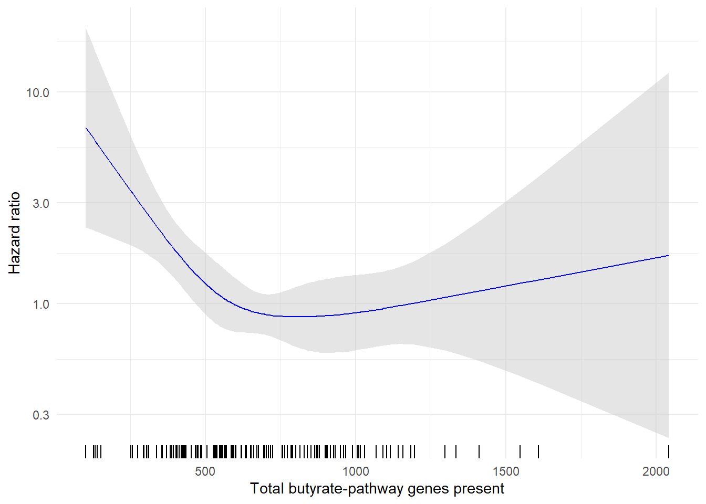
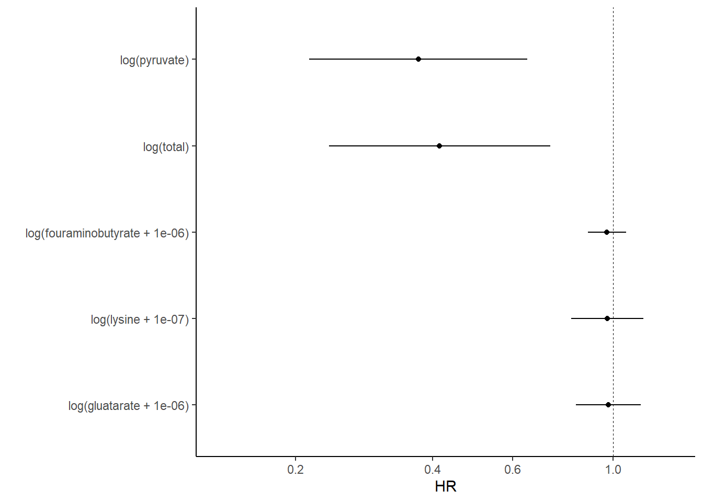

[1] "blinded_subject_id" "id_int" "cohort"
[4] "age" "impact_tmb_score" "cpb_drug"
[7] "ecog" "best_overall_response" "tt_pfs_d"
[10] "pfs_event" "tt_os_d" "event_os"
[13] "TMPT" "WMS_SGPID" "SAMPID"
[16] "total" "samp_id" "identifier.y"
[19] "Shannon" "tx" "age10"
[22] "med_buty" "fouraminobutyrate" "gluatarate"
[25] "lysine" "pyruvate"  Extended Figure 3 Gene Abundance and Hazard Ration, and Univatiate Analysis of Butyrate Pathway.
Extended Figure 3 Gene Abundance and Hazard Ration, and Univatiate Analysis of Butyrate Pathway.
Some of these cells will be executable using only the public data. These section panels Look like this. Other sections rely on data we are not able to make public (for example patient-level survival data). These section panels Look like this.
Survival plots as a function of pyruvate gene abundance:
Panel A
Hazard Ratio of Overall Survival Evaluated with respect to Butyrate production gene RPKM.
os_butyrate <- coxph(Surv(tt_os_d, event_os)~rms::rcs(total,4)+age10+factor(cohort)+ecog,, data = acoa_df)
ptemp <- termplot(os_butyrate, se=T, plot=F)
buterm <- ptemp$total
center <- buterm$y[which(buterm$y == median(buterm$y))]
ytemp <- buterm$y + outer(buterm$se, c(0, -1.96, 1.96), '*')
exp_ytemp <- exp(ytemp - center)
spline_data <- data.frame(buty = buterm$x, Estimate = exp_ytemp[,1],
Lower = exp_ytemp[,2], Upper = exp_ytemp[,3])
ggplot(spline_data, aes(x = buty)) +
geom_ribbon(aes(ymin = Lower, ymax = Upper), fill = "grey80", alpha = 0.5) +
geom_line(aes(y = Estimate), color = "blue") +
geom_rug(sides = "b") + # Add rug plot at the bottom ('b') of the plot
scale_y_log10() + # Log scale for y-axis
labs(x = "Total butyrate-pathway genes present", y = "Hazard ratio") +
theme_minimal()
Panel B
Univariate model of OS as a function of total butyrate genes, and each major sub-pathway in the butyrate production gene pathways.
univ2 <- function(cox, k=1, l=1){
coef <- exp(coef(cox))
confint <- exp(confint(cox))
p <- summary(cox)$coefficients[,5]
out <- data.frame("HR"=round(coef,4), round(confint,4), "p"=round(p,9))
q <- nrow(out)
if(l== -1){out <- out[q,]
}else{out <- out[k:l,]}
return(out)
}
forest_os <- rbind(
univ2(coxph(Surv(tt_os_d, event_os)~log(total)+age10+cohort+ecog, acoa_df)),
univ2(coxph(Surv(tt_os_d, event_os)~log(pyruvate)+age10+cohort+ecog, acoa_df)),
univ2(coxph(Surv(tt_os_d, event_os)~log(lysine+0.0000001)+age10+cohort+ecog, acoa_df)),
univ2(coxph(Surv(tt_os_d, event_os)~log(fouraminobutyrate+0.000001)+age10+cohort+ecog, acoa_df)),
univ2(coxph(Surv(tt_os_d, event_os)~log(gluatarate+0.000001)+age10+cohort+ecog, acoa_df)))
forest_os %>%
rename_with(~ c("HR", "CI_low", "CI_high", "p"), .cols = everything()) %>%
rownames_to_column("scfa") %>%
ggplot() +
geom_vline(xintercept=1, lty=2, size=0.25)+
geom_point(aes(x=HR, y=fct_reorder(scfa, HR, .desc = T)))+
geom_linerange(aes(xmin=CI_low, xmax=CI_high, y=fct_reorder(scfa, HR)), size=0.5) +
scale_x_continuous(transform = "log", breaks=round(exp(seq(-2,1.5,0.5)),1)) +
theme_classic() +
coord_cartesian(xlim=exp(c(-2, 0.3))) +
labs(y = "")